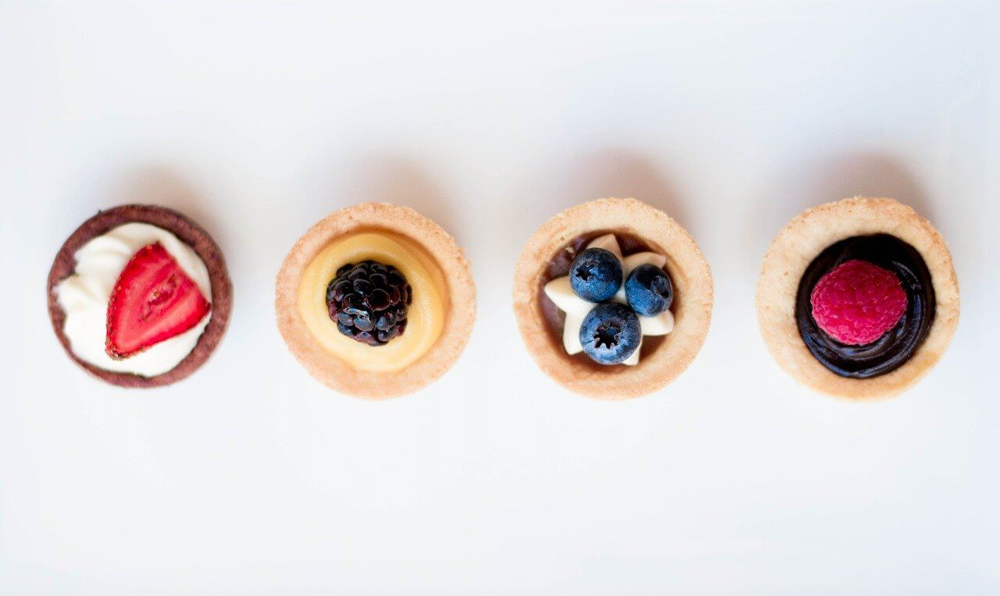

Sobre Nosotros

En BlogDeDulces.com encontrarás recetas para hacer los postres que más te gustan. Todas las recetas tradicionales y algunas recetas más modernas, empleando técnicas de cocina actuales pero siempre con un método sencillo, permitiendo que te resulten recetas muy fáciles de hacer.
En este blog de cocina disfrutarás de las recetas de postres más fáciles, son recetas que no necesitan horno. Pero también recetas de bizcochos, recetas de tartas, recetas de magdalenas, recetas de galletas y un sin fin de recetas de repostería que no vas a poder dejar de cocinar.